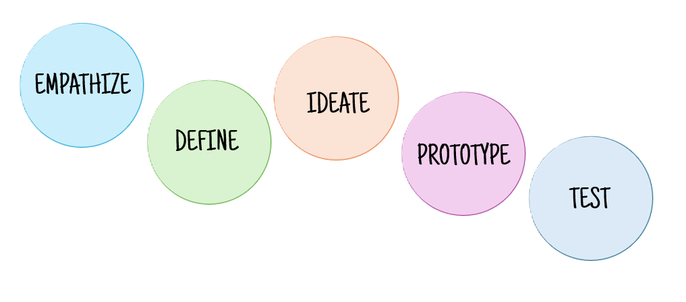

AK2
Quick’n’Dirty
Vi laget en kjapp prototype med Google AI Studio basert på en enkel prompt for å utforske ideen om et læringsløp uten å bruke mye tid på detaljer.
MASTERPROGRAM I DIGITALT LÆRINGSDESIGN
Ingvil Hasås Martinsen
Etter 17 år som lærer begynte jeg høsten 2026 på masterstudiet i digitalt læringsdesign ved OsloMet. Jeg var veldig motivert og kanskje litt overivrig før studiestart, og lagde min første nettside for å presentere meg for de andre studentene.
I denne porteføljen viser jeg hvordan jeg har jobbet med design thinking, kreative metoder og prototyping gjennom semesteret. Porteføljen er organisert etter fasene i designprosessen og viser eksempler fra tre arbeidskrav og ulike aktiviteter i undervisningen. Eksemplene er merket med hvilket arbeidskrav de tilhører.
Utforsk porteføljen
Empathize & Define
En viktig del av design thinking er å forstå hvem vi designer for, og hvilke behov og utfordringer de har. Gjennom arbeidskravene har jeg fått erfaring med ulike metoder for å bli kjent med målgruppen, og brukt denne innsikten til å formulere et Point of View (POV).
Vi brukte denne metoden for å få en bedre forståelse av situasjonen til elever som strever med høyt skolefravær.
Vi utviklet tre personas for å utforske ulike perspektiver og behov knyttet til det å være ny lærer på en skole.
Vi laget et storyboard for å illustrere en situasjon der en ny lærer opplever å stå alene med en utfordring i klasserommet.
Vi jobbet oss gjennom fire trinn for å analysere informasjonen fra intervjuene, identifisere behov og innsikter og formulere et Point of View (POV) som utgangspunkt for videre idéutvikling.
Ideate
I idéutviklingsfasen har jeg vært med på å utforske ulike kreative metoder for å generere, kombinere og videreutvikle ideer. Målet har vært å åpne opp for flere mulige løsninger før vi valgte hvilke ideer vi ville gå videre med.
Vi laget en kjapp prototype med Google AI Studio basert på en enkel prompt for å utforske ideen om et læringsløp uten å bruke mye tid på detaljer.
Vi brukte metoden til å utvikle mange ideer på kort tid. I den andre runden tok vi utgangspunkt i ideene fra første runde og bygget videre på dem.
Vi brukte en matrise for å kombinere ulike ideer og undersøke om nye løsninger kunne oppstå gjennom kombinasjonene.
Vi brukte metoden til å vurdere og sortere de tre hovedideene våre. Med utgangspunkt i vurderingskriteriene fra Idea Sorter diskuterte vi deretter hvilke funksjoner i appen vi ønsket å arbeide videre med (de grønne lappene viser hva vi valgte å gå videre med).
Wireframes: Gjennom enkle skisser har jeg vært med på å eksternalisere ideer til ulike læringsressurser og en app. Da vi fikk ideene ned på papiret, ble det lettere å se hva som fungerte, hva som manglet, og hvilke nye muligheter vi kunne utforske.
Prototype
Gjennom semesteret har jeg vært med på å utvikle ulike prototyper, fra enkle visuelle løsninger til interaktive digitale læringsressurser og apper. Prototypene har gjort det mulig å konkretisere ideene og utforske hvordan de kan fungere i praksis.
Vi utviklet en prototype med forslag til skilting og en digital informasjonsskjerm for å gjøre det enklere å finne fram i P48 på OsloMet.
Vi utviklet et interaktivt læringsløp i Google AI Studio, der elevene kan utforske ulike energiformer gjennom tekst, oppgaver og simulering. Vi laget også en KI-chatbot, Energieksperten Erik, som kan veilede elevene underveis.
Prøv læringsløpetVi utviklet en prototype på en app i Google AI Studio som skal hjelpe nyansatte lærere i arbeidshverdagen, enten gjennom en infobot, et kart over skolen eller kontakt med kollegaer.
Prøv LærerlosTest & iterasjon
Ikke alt har fungert som vi hadde sett for oss på første forsøk. Gjennom semesteret har vi prøvd ut og videreutviklet prototypene gjennom flere iterasjoner. Vi har også fått mulighet til å teste noen av løsningene med faktiske brukere og få tilbakemeldinger på det vi har laget.
Gjennom flere iterasjoner gjorde jeg det digitale spillet mer oversiktlig, brukervennlig og innbydende for elevene.
Prøv Algebrablomsten ↗Elevtesting (AK2): Vi lot elever på 9. trinn prøve ut læringsløpet Energiformer og gi tilbakemeldinger gjennom et spørreskjema. Tilbakemeldingene ga oss innsikt i hva som fungerte, og hva som kunne forbedres.
ville gjerne arbeide mer på denne måten
24 av 25 eleversvarte at de fikk god hjelp av chatboten
7 svarte «litt» og 4 «nei»«Det var spennende at det var den som stilte spørsmål, og ikke jeg.»
«Jeg syns at Erik [chatbotten] var skikkelig bra. Fikk veldig mye hjelp.»
«Veldig bra og gøye oppgaver men litt lette noen av de.»
«Det sto grønn på riktig svar før man svarte.»
En elev påpekte at riktig svar var markert med grønt før man svarte. Dette er noe vi ville endret dersom vi jobbet videre med prototypen.
Lærerlos – iterasjoner (AK3): Fra en enkel wireframe utviklet vi SOS-funksjonen gjennom flere iterasjoner. Underveis jobbet vi med både funksjonalitet, brukervennlighet og visuell utforming.
Refleksjon
Dette semesteret har jeg hatt gleden av å dykke inn i design thinking. Jeg har fått en forståelse for hvorfor denne prosessen fungerer så godt. Det å virkelig forstå brukernes utfordringer før man prøver å løse dem, at man kan jobbe målrettet med kreativitet, og at ideer utvikler seg når de blir konkretisert, har vært utrolig spennende innsikter. Jeg har kost meg både i divergent fase, når man kan finne på masse rart, og i konvergens, når man må fokusere på å bevege seg mot et mål.
Selv om man gjerne tegner fasene i design thinking som en lineær prosess, er min opplevelse at man beveger seg så mye fram og tilbake at det nesten er umulig å lage nok piler på figuren til å beskrive hva man egentlig driver med. Men framover har det gått likevel, og jeg er stolt av alle arbeidskravene mine og prosessen jeg har gått gjennom for å komme dit.
Gjennom semesteret har jeg brukt ulike metoder og modeller fra pensumlitteraturen. Særlig har The Design Thinking Playbook (Lewrick et al., 2018), Gamestorming (Gray et al., 2010) og Explaining Creativity (Sawyer & Henriksen, 2023) vært nyttige i arbeidet med design thinking, idéutvikling og prototyping.